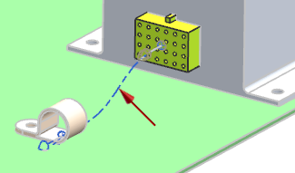
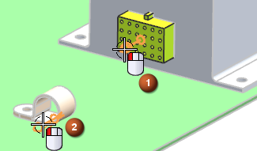

Create the first path

Start by routing a segment from the 24 pin connector to the clamp.
-
On the Selection bar, turn off all Snap Point options except for
 .
.
-
Select the port on the connector, then the SOP on the nylon clamp. Zoom in and out as needed.

-
Click Apply.